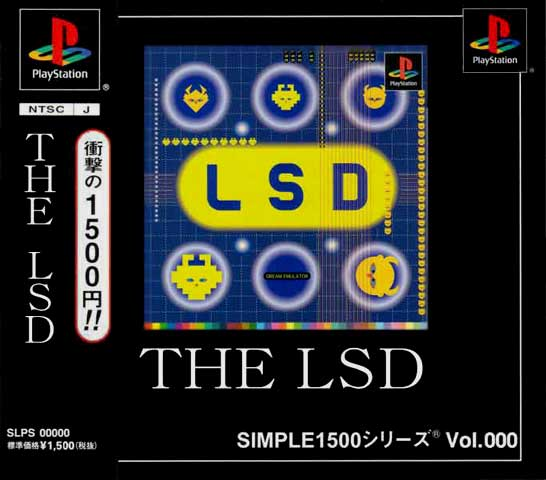
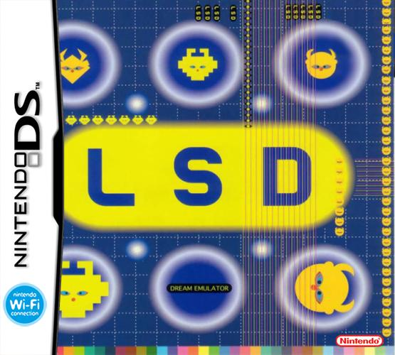
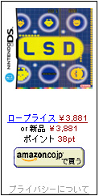

その他のLSD情報やらなにやら
ここは、他のページにあぶれたPS用ゲーム「LSD」に関する情報を書き綴るページです。
よくありそうな質問
- Q.これってゲーム？
- A.プレステで動きますがゲームではありません。ドリームエミュレータです。
ゲームではないので、発売当時ファミ通にレビューされなかったらしいです(笑)
- Q.限定版と通常版の違いは？
- A.初回版には音楽CDが入ってますが、通常版には入ってません。
多分、違いはそれだけ。（未確認）
初回版は普通の1枚入ってるのと同じサイズ（音楽CDサイズ）だけど、中に2枚入るタイプです。
中を開けないと見分けがつかないかも？
- Q.どこで売ってるの？
- A.現在は生産されてないので中古ゲーム屋などで探す事になりそう。
中古ゲーム屋では「その他」コーナーに置かれてる事が多いそうです。
追記：PSゲームアーカイブスで配信されました。
- Q.タイトルの「LSD」ってどういう意味？
- A.Link、Speed、Dreamの頭文字から取って「LSD」です。（ソース）
- Q.結局、このゲームって面白いの？
- A.クセの強いゲームなので人によって好き嫌いがハッキリ分かれます。購入の際は慎重に。
とりあえず3Dゲームで酔った事ある人はやめといた方が無難です。
LSD解析テキスト
LSDのディスクをPCに入れると色んなデータが見られます。
LSDのBGMをMIDIにして切り出す方法.txt
pgconvを使ってLSDのBGMをmidi化させる方法。
太田出版「超クソゲー2」のLSDの紹介ページをテキスト化。
エイプリルフールネタ
LSDがSIMPLE1500seriesに登場！？

LSDがまさかのnintendoDSに移植！？

LSDがnintendoDSに移植されるらしい。
PS版の完全移植に加えて、新MAP、新オブジェクト、新機能追加が決定している。
DSならではの新機能としてタッチペンでオブジェクトをいじることが出来るようになった。
これによってバイオレンス街で少女のスカートをめくったり、死体をツンツンしたりすることも……！？
さらに、タッチペンで君の考えたオブジェクトを自由に描いて配置することも出来るぞ！
wifiを使って他のプレイヤーとのコミュニケーション出来る機能も予定されている。

<<BACK